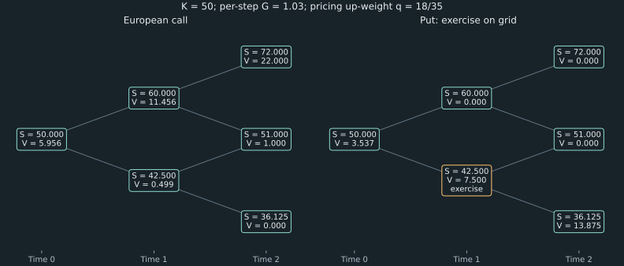

8. Replication and binomial valuation
A share costs 100 and will be worth either 120 or 90 after one period. A safe investment grows by a factor of 1.1. What is a European call with strike 110 worth? Buying one third of a share and borrowing approximately 27.272727273 reproduces the option's payoff in either state. That portfolio costs approximately 6.060606061. No forecast of which state is more likely was needed. The same number will emerge from a discounted expectation whose probabilities describe pricing rather than physical frequency.
These are the first option-pricing lecture's numbers, recomputed without rounding intermediate steps. They differ from Chapter 7's hypothetical quote, strike, and funding example. We first prove a one-period result, then apply it repeatedly through a recombining lattice. The extension exposes two distinct decisions: how to compute each state once, and whether the holder can exercise before expiration.
Source spine: recording 23, A First Option Price, recording 24, The Lattice Extends, and recording 26, Worked Out Problems. Full proofs of no-arbitrage, self-financing rollback, complexity, and the interest-rate qualification for early exercise are elaborations. The companion program executes every numerical case and compares independent valuation routes.
8.1 The safe return must lie between the two stock returns Recording 23, 3:37
Fix a single period. The initial share price is $S>0$, its terminal prices are $Su$ and $Sd$, with $0<d<u$. A bank balance $B$ grows to $GB$, where $G>0$ is the period's certain gross return. Positive $B$ means lending; negative $B$ means borrowing. Assume both stock states are possible, each with strictly positive physical probability. Fractional holdings, short sales, unrestricted borrowing and lending at this same rate, no default, no dividends, and no trading or collateral costs define the market being analyzed.
An arbitrage here is a strategy with zero initial net cost, nonnegative terminal wealth in both states, and strictly positive wealth in at least one possible state. If $G\geq u$, short one share and invest the receipt $S$ in the bank. Initial net cost is zero; terminal wealth is $S(G-u)$ in the up state and $S(G-d)$ in the down state. Both are nonnegative and the down-state wealth is positive. This includes $G=u$: equality is not harmless when the other state remains possible.
If $G\leq d$, borrow $S$ and buy a share. Terminal wealth is $S(u-G)$ or $S(d-G)$, again nonnegative with a positive up-state result. These constructions prove the necessary condition
\[ d<G<u.\tag{8.1} \]It is also sufficient for the stock-and-bank market. Define $q=(G-d)/(u-d)$, so $0<q<1$ and $qu+(1-q)d=G$. A portfolio of $\Delta$ shares and bank balance $B$ has terminal values $W_u=\Delta Su+GB$ and $W_d=\Delta Sd+GB$. Direct averaging gives
\[ \frac{qW_u+(1-q)W_d}{G}=\Delta S+B.\tag{8.2} \]If its initial cost were zero while both terminal values were nonnegative and one positive, the left side would be strictly positive because both weights are positive. The right side would be zero, a contradiction. Thus (8.1) rules out arbitrage in this two-security, two-state market. This proof does not assert absence of arbitrage in a market containing some additional inconsistently priced claim.
The recurring example satisfies $0.9<1.1<1.2$. Its “down” state is a 10% fall and “up” state a 20% rise, but the proof only needs the ordered positive factors. Neither factor has to straddle one; both can describe positive stock returns provided the safe factor lies strictly between them. Degenerate equal stock states and physically impossible branches require a different state model.
8.2 Solve for holdings that match both states Recording 23, 12:41
Let a claim pay finite amounts $f_u$ and $f_d$ in the two terminal states. Seek $\Delta$ shares and a time-zero bank balance $B$ such that
\[ \Delta Su+GB=f_u,\qquad \Delta Sd+GB=f_d.\tag{8.3} \]Subtract the equations to eliminate the bank account. Because $S(u-d)>0$, this uniquely determines the stock holding. Substitution gives the bank balance:
\[ \Delta=\frac{f_u-f_d}{S(u-d)},\qquad B=\frac{uf_d-df_u}{G(u-d)}.\tag{8.4} \]The matrix with rows $(Su,G)$ and $(Sd,G)$ has determinant $SG(u-d)\ne0$. Thus every two-component terminal claim has one replicating stock-and-bank portfolio. This is completeness of this particular two-state market. It comes from spanning the possible state payments, not from labeling an option European. A European claim in a richer incomplete market need not have a unique replication price; conversely, an exotic path payoff on a complete finite tree can be replicated with trading adapted to its history.
The portfolio costs $V_0=\Delta S+B$. If the claim traded above this cost, sell the claim and buy the replicating portfolio; if below it, reverse the positions. The terminal claims cancel in either direction. Under the same trading assumptions as before, no-arbitrage therefore determines the unique relative price
\[ V_0=\Delta S+B.\tag{8.5} \]For the running call, terminal prices are 120 and 90 and strike is 110, so $f_u=10$ and $f_d=0$. Therefore $\Delta=10/30=1/3$ and $B=-30/1.1=-300/11\approx-27.272727273$. The negative bank balance means a loan of that amount initially. At expiration the loan repayment is 30, so the state values are $120/3-30=10$ and $90/3-30=0$. The cost is
\[ C_0=100/3-300/11=200/33\approx6.060606061.\tag{8.6} \]The lecture's spoken bank-balance decimals are inconsistent at a few points; the equations and unrounded calculation resolve the ambiguity. If the call were quoted at 7, writing it and buying the replicating portfolio produces initial credit $7-200/33=31/33\approx0.939393939$. Invest this credit. The hedge cancels the written option in both states, and the investment pays approximately 1.033333333 at the end with zero net initial outlay.
For a put with the same strike 110, terminal payments are $0$ and $20$. Equation (8.4) gives $\Delta=-2/3$ and $B=800/11\approx72.727272727$: short stock and lend the proceeds plus the required initial net investment. Its price is also $200/33$. This agrees with Chapter 7's parity because $K/G=110/1.1=100=S$, so $C_0-P_0=0$. Equal prices here follow from this particular spot, strike, and discount factor; calls and puts are not generally equally priced.
8.3 A probability measure selected by prices Recording 23, 20:01
Substitute (8.4) into the portfolio cost and collect coefficients of the two terminal payments:
\[ \begin{aligned} V_0&=\frac{f_u-f_d}{u-d}+\frac{uf_d-df_u}{G(u-d)}\\ &=\frac{(G-d)f_u+(u-G)f_d}{G(u-d)} =\frac{qf_u+(1-q)f_d}{G},\qquad q=\frac{G-d}{u-d}. \end{aligned}\tag{8.7} \]The strict no-arbitrage inequalities make $q$ and $1-q$ positive and summing to one. They define an ordinary mathematical probability measure $Q$ on the two states. It is called a risk-neutral pricing measure because $qSu+(1-q)Sd=GS$: under $Q$, the stock's expected gross return equals the safe return. It is not an estimate of the physical probability $p$ that the stock actually rises. The physical and pricing measures can both be valid probability measures while assigning different weights to the same possible outcomes.
In the running model, $q=(1.1-0.9)/(1.2-0.9)=2/3$. The call's $Q$-expected payoff is $20/3$, and discounting by 1.1 gives $200/33$. Equation (8.7) holds for every finite two-state claim, not merely the positive call payoff. The equivalence with replication is an algebraic theorem; matching two decimal answers is a check on the implementation, not its proof.
To see why physical and pricing expectations differ, suppose the physical up probability is $p=0.8$. The call's physical expected payoff is 8. Dividing by 1.1 gives approximately 7.272727273, which is not its replication price. At the replication price its physical expected simple return is $8/(200/33)-1=0.32$, rather than the safe return of 0.10. The claim is risky, so its physical expected return need not equal the safe rate. No-arbitrage has priced the claim relative to the specified underlying prices and states; it has not forecast physical frequencies or derived those primitive prices from investor preferences.
The statement “all assets earn the safe expected return under $Q$” needs care for a signed or zero-price claim, since dividing by its initial price may not define an ordinary investment return. The general statement is the value identity $V_0=G^{-1}\mathbb E_Q[V_T]$. In a multiperiod model its conditional form says the discounted value process is a martingale: at a node its discounted next-step expectation equals its current discounted value. This is a pricing identity under $Q$, not a claim that physical price changes have zero predictability.
The original Cox–Ross–Rubinstein paper, especially PDF pages 4–7, develops the hedge and this separation from investors' physical probabilities. Its symbol $r$ denotes the safe gross factor in the discrete argument; this chapter uses $G$ to avoid confusing that factor with an annual continuously compounded rate.
8.4 Roll backward through a recombining market Recording 24, 1:36
Use $n$ periods with the same factors $u,d,G$ at each step. At time level $i$, after $j$ up moves and $i-j$ down moves, the stock price is
\[ S_{i,j}=S_0u^jd^{i-j},\qquad 0\leq j\leq i\leq n.\tag{8.8} \]Up then down and down then up lead to the same price because multiplication commutes. There are $2^n$ ordered up/down paths but only $n+1$ distinct terminal prices, indexed by the number $j$ of up moves. The $n+1$ claim values suffice for a European payoff depending only on $S_T$ in this homogeneous model. A path-dependent claim may require additional state even when its underlying price recombines.
At expiration set $V_{n,j}=f(S_{n,j})$. At each earlier node, the two children have known next-period claim values. Apply the one-period result locally:
\[ V_{i,j}=\frac{(1-q)V_{i+1,j}+qV_{i+1,j+1}}{G}. \tag{8.9} \]Index $j$ counts up moves, so child $j$ is down and child $j+1$ is up. This ordering matters in a vector implementation. An intermediate European value is the value of the remaining claim; it is not permission to exercise there.
Backward induction proves that (8.9) yields an attainable self-financing hedge. At the last trading date, (8.4) gives holdings matching the two terminal payments. Suppose each child's computed value already finances a strategy that reproduces the remaining claim from that child onward. At the parent, buy the one-period portfolio whose next values equal exactly those two child costs. After observing the move, its wealth is sufficient to purchase the required child strategy. Rebalancing uses existing portfolio wealth and requires no outside cash. Repeating this argument to the root proves the full dynamic replication. The initial hedge generally changes after a move; holding its initial stock and bank positions unchanged until the end would not implement the induction.
There is also a direct terminal expression. Assign up probability $q$ conditionally at every node. A particular ordered path containing $j$ ups has probability $q^j(1-q)^{n-j}$ by successive conditional multiplication. Choosing the $j$ up positions gives $\binom nj$ paths sharing that terminal price. Expanding the repeated rollback, or summing these mutually exclusive paths, gives
\[ V_0=G^{-n}\sum_{j=0}^{n}\binom nj q^j(1-q)^{n-j} f(S_0u^jd^{n-j}).\tag{8.10} \]The total discount is $G^{-n}$, not $G^{-1}$. The binomial coefficient is essential: a middle price can be reached by several paths. Constant conditional pricing weights produce this binomial law; recombination alone would not justify a binomial distribution if transition weights changed with time or state. The derivation makes no statement that the physical up/down sequence is independent.
The original CRR paper's PDF pages 8–10 explain why local hedges can be rebalanced without new funds and develop the multiperiod sum. Equations (8.8)–(8.10) here expose the state, indexing, and induction used by the companion; they are the mathematical specification of its rollback routine.
8.5 Choose factors consistently with the horizon Recording 24, 3:52
When a fixed horizon $T$ is divided into $n$ equal periods, write $\Delta t=T/n$. The Cox–Ross–Rubinstein parameterization uses volatility parameter $\sigma>0$ and an annual continuously compounded safe rate $r$:
\[ u=e^{\sigma\sqrt{\Delta t}},\quad d=e^{-\sigma\sqrt{\Delta t}}=u^{-1},\quad G=e^{r\Delta t},\quad q=\frac{G-d}{u-d}.\tag{8.11} \]Time is measured in years, so $\sigma$ has units inverse square-root year and $r$ inverse year. The exponential arguments are dimensionless. Here $r$ is a continuously compounded rate; it is not the earlier one-period effective return $G-1$. Across the whole horizon, $G^n=e^{rT}$.
Before computing a price, check no-arbitrage. Taking logarithms of $d<G<u$ gives $-\sigma\sqrt{\Delta t}<r\Delta t<\sigma\sqrt{\Delta t}$, or
\[ |r|\sqrt{\Delta t}<\sigma.\tag{8.12} \]A coarse grid can fail this condition even for familiar parameter magnitudes. Increasing $n$ reduces $\Delta t$ and can restore strict inequalities when $\sigma>0$. Setting $\sigma=0$ collapses the two states and makes (8.7) undefined; a deterministic stock is a separate model, not an invitation to divide by zero or clip $q$ into $[0,1]$.
For a fully specified reconstruction of the lecture's rounded three-step illustration, take $S_0=K=100$, $T=1$, $r=0.10$, $\sigma=0.30$, and $n=3$. These declared inputs reproduce the approximate terminal prices discussed in the recording. Executing (8.11) gives $u\approx1.189109944$, $d\approx0.840965131$, $G\approx1.033895114$, and $q\approx0.554165897$. Using full-precision factors gives:
| Number of ups $j$ | $S_{3,j}$ | Call payoff, strike 100 |
|---|---|---|
| 0 | 59.474933836 | 0 |
| 1 | 84.096513139 | 0 |
| 2 | 118.910994365 | 18.910994365 |
| 3 | 168.138060105 | 68.138060105 |
The level-2 call values, ordered by up count, are approximately $(0,10.136258520,44.676635760)$; level 1 has $(5.433016096,28.317531699)$. The root value is 17.520959305. Both rollback and the direct terminal sum reproduce it. In particular, the all-up terminal stock price is $S_0u^3$, not $S_0du^3$, which would count four moves.
Refining the time grid means recomputing $u,d,G$ from the new $\Delta t$. Holding the same fixed factors while increasing the step count instead changes the total horizon or total movement scale. The diffusion limit suggested by this parameterization needs a separate convergence argument; a finer list of possible prices alone does not prove realism, accuracy for observed markets, or monotone convergence of option values.
8.6 Compute each lattice state once Recording 24, 14:04
A direct recursive function mirrors (8.9): if no periods remain, return the payoff; otherwise call itself for both children and combine their values. Without caching, the same recombined state is revisited through every history reaching it. A depth-$n$ binary call tree has $2^n$ leaf evaluations and $1+2+\cdots+2^n=2^{n+1}-1$ calls. With constant-time arithmetic and payoff evaluation, time is $O(2^n)$ while the depth-first call stack uses $O(n)$ space. Recursion is a way to express the recurrence; redundant work is the defect of this uncached implementation, not of recursion in principle.
Memoizing each integer pair $(i,j)$ reduces the number of states to $\sum_{i=0}^n(i+1)=(n+1)(n+2)/2$, giving $O(n^2)$ time and stored values. Keying by a computed floating-point stock price is unnecessary and can miss recombination because multiplication orders round differently. The discrete state indices describe the model exactly.
For terminal-price-only claims, rolling backward one whole level at a time also uses $O(n^2)$ time but needs only $O(n)$ storage. The invariant is: before processing level $i$, the active list contains exactly the already-computed values $V_{i+1,j}$ in ascending up-count order. Each update replaces entry $j$ with (8.9). Iterating $j$ upward keeps both old children intact until they are read: previous updates touched only smaller indices. Iterating downward would overwrite child $j+1$ before the next update needs its old value.
The complete miniature below assumes valid finite factors, interior $q$, nonnegative finite stock nodes, and a scalar payoff. It demonstrates the storage invariant on the lecture's one-step call. The full companion supplies validation, optional history retention, grid exercise, and independent comparisons.
def european_tree(spot, up, down, growth, steps, payoff):
q = (growth - down) / (up - down)
values = [payoff(spot * up**j * down**(steps - j))
for j in range(steps + 1)]
for level in range(steps - 1, -1, -1):
for j in range(level + 1):
values[j] = ((1 - q) * values[j] + q * values[j + 1]) / growth
values.pop()
return values[0]
def call(s):
return max(s - 110.0, 0.0)
value = european_tree(100.0, 1.2, 0.9, 1.1, 1, call)
assert abs(value - 200 / 33) < 1e-12
print(f"One-step call: {value:.9f}")
After all updates, the only value remaining is $V_{0,0}$. The rolling algorithm visits $n(n+1)/2$ nonterminal nodes and $n+1$ terminal nodes. With a payoff callback costing $C_f$, the European version costs $O(n^2+nC_f)$ because only terminal nodes evaluate that callback. Grid exercise evaluates it at every node, giving $O(n^2(1+C_f))$. A deliberate request for every historical level changes storage to $O(n^2)$; the companion's default does not retain that history.
The companion validates positive finite spot/factors, strict $d<G<u$, and positive integer step counts; booleans are not treated as step counts. It allows signed finite European claim payments. Its grid-exercise mode requires a nonnegative immediate payoff. Stock nodes are formed from log prices and exponentiated; overflow, underflow to zero, nonfinite callbacks, and nonrepresentable interior weights are rejected. These checks expose range failures but are not a complete conditioning analysis. Very close factors can magnify roundoff in $q$, and the direct binomial sum is only a small-tree cross-check: large binomial coefficients and tiny powers need more careful probability evaluation.
The program compares naive recursion, rolling rollback, and direct sums on small trees, verifies statewise hedge equations, and checks both valid and invalid boundaries. Agreement among routes tests different indexing and arithmetic arrangements. It does not establish that a chosen tree is a good description of an actual stock.
8.7 Compare exercise with the value of retaining the right Recording 24, 21:17
For a claim exercisable on the tree's dates, let $f(S_{i,j})\geq0$ be its immediate exercise payment. At expiration $A_{n,j}=f(S_{n,j})$. Earlier, compute the continuation value from the two child option values, then compare it with exercising now:
\[ H_{i,j}=\frac{(1-q)A_{i+1,j}+qA_{i+1,j+1}}{G},\qquad A_{i,j}=\max\{f(S_{i,j}),H_{i,j}\}.\tag{8.13} \]Both terms in the maximum are values at the current node's date. Do not discount the immediate payoff again, or compare it with an undiscounted future amount. The continuation already incorporates optimal decisions at later nodes, not a promise to hold until maturity regardless of subsequent information.
Finite backward induction justifies the decision rule. At the last date the exercise payment is known. If child values describe optimal future exercise choices, waiting one period gives their discounted conditional $Q$-expectation; exercising now gives the current payment. These are all available first decisions, so their maximum is the optimal value at the parent. Repetition gives the root value and an attainable exercise rule: exercise wherever the first term is strictly greater, continue wherever the second is strictly greater, and choose either at a tie. With no intervention costs, the matching child hedges provide the continuation financing as in §8.4.
Since exercise at expiration remains available, added exercise dates cannot lower value. Algebraically, terminal American and European values agree; if $A$ is at least the European value at each child, positive weighted averaging preserves the inequality and taking a maximum preserves it again. Thus $A_{0,0}\geq V_{0,0}$. On a finite grid, the code's american=True means exercise only at these grid dates. It is exact for that discrete model, often called Bermudan exercise. It is not an exact solution for continuously available exercise between dates.
For a non-dividend-paying call and $G\geq1$, early exercise need not improve the value. At a node with $m$ periods remaining, the European terminal payoff satisfies $(S_T-K)^+\geq S_T-K$ and is nonnegative. Since the stock's conditional $Q$-expected terminal value is $S_{i,j}G^m$, the European value obeys
\[ V^{\rm call}_{i,j}\geq\max(0,S_{i,j}-K/G^m) \geq(S_{i,j}-K)^+.\tag{8.14} \]The final inequality uses $K\geq0$ and $G^m\geq1$. At the final date the two exercise styles agree. If American and European child values agree, American continuation equals the European value at the parent, which (8.14) shows is at least the immediate payoff. Induction therefore gives equality of the two call values throughout. There can be ties, so “early exercise never increases value” is more precise than “early exercise is always strictly worse.” Dividends would change the stock-value step in this argument.
Negative interest removes the guarantee. Consider a separate one-period model with $S=100$, $u=1.1$, $d=0.9$, $G=0.95$, and $K=50$. Both branches remain possible and $d<G<u$. The European call pays $S_T-50$ in either state, so its value is $100-50/0.95\approx47.368421053$. Immediate exercise gives 50, and the grid-exercisable call is worth 50. The growth factor stays positive; its net safe return is negative. The lecture's no-dividend statement therefore needs a rate qualification as well as its distribution assumption.
A put can benefit from early exercise even at a positive rate: receiving the strike sooner can outweigh the remaining optionality. The worked tree below identifies the actual node where this tradeoff favors exercise, rather than assuming that every in-the-money put should immediately be exercised.
8.8 Work the contracts, hedge, and exercise tree Recording 26, 0:44
The workshop combines the preceding chapter's contract arithmetic with this chapter's model-based prices. Its examples use separate underlying shares and inputs; they are not simultaneous quotations from one market. The companion keeps them as separate fixtures and recomputes each before comparing rounded answers.
Different strikes can leave both options worthless
The first pair is a call with strike 130 and a put with strike 115, both European and with the same expiration. Their respective payoffs at terminal prices 145, 120, and 108 are $(15,0)$, $(0,0)$, and $(0,7)$. In fact, both pay zero throughout $115\leq S_T\leq130$. The statement that exactly one of a call or put is in the money applies only when they have the same strike and the price differs from it. The writer owes the negative of the corresponding payoff, while its profit also includes the received premium and the chosen funding convention.
The protective-put example starts with a share priced at 90 and a put struck at 85. Its gross terminal values at 70, 85, and 100 are 85, 85, and 100. The covered-call example starts with a share priced at 90 and a written call struck at 95; its values at 80, 95, and 110 are 80, 95, and 95. These computations identify the floor and cap but cannot determine net profit without option premiums and financing.
The next parity exercise supplies $S_0=78$, $K=80$, $D=0.96$, and $C_0=4.80$. For the corresponding no-dividend European put, $P_0=4.80-78+80(0.96)=3.60$. The share-plus-put and call-plus-strike-bond packages both cost 81.60 and both pay $\max(S_T,80)$. At 60 they each pay 80; at 100 they each pay 100. These are checks on the general identity, not a way to price the original call quote independently.
A fresh one-step replication
The copper-company example has $S_0=40$, terminal prices 46 or 34, $G=1.04$, and call strike 42. Thus $u=1.15$, $d=0.85$, and terminal call payments are 4 and 0. Equation (8.4) gives $\Delta=4/(46-34)=1/3$, $B=-(34/3)/1.04\approx-10.897435897$, and call value approximately 2.435897436. The pricing up-weight is $q=(1.04-0.85)/(1.15-0.85)=19/30$. Discounting $q(4)+(1-q)(0)$ by 1.04 gives the same value.
A two-step call and a put with an early-exercise decision
Now use $S_0=50$, $u=1.2$, $d=0.85$, $G=1.03$ per period, $K=50$, and two periods. The up-weight is $q=18/35$. Terminal stock prices in ascending order are $36.125,51,72$, so call payoffs are $0,1,22$ and put payoffs are $13.875,0,0$.
| Quantity | Down node at time 1, $S=42.5$ | Up node at time 1, $S=60$ | Time-zero value |
|---|---|---|---|
| European call | 0.499306519 | 11.456310680 | 5.955667214 |
| European put | 6.542995839 | 0 | 3.085462670 |
| Put exercisable on the grid | 7.5 | 0 | 3.536754508 |
For the call, the up-node value is $[q(22)+(1-q)(1)]/1.03$ and the down-node value is $q(1)/1.03$. Discounting their weighted average once more gives the root price. The independent terminal sum is $[q^2(22)+2q(1-q)(1)+(1-q)^2(0)]/1.03^2$, which gives the same answer.
At the put's time-1 down node, immediate exercise pays $50-42.5=7.5$. Continuing pays $[(1-q)13.875+q(0)]/1.03\approx6.542995839$. Choose exercise. At the up node, immediate exercise and continuation both give zero; choosing to wait is permissible but not strictly better. At the root, immediate exercise gives zero while continuation gives $(1-q)7.5/1.03\approx3.536754508$. Thus the optimal root decision is to wait, then exercise if the first move is down. The European put must wait in that down state and is worth less.

8.9 What the finite market proves
The model prices claims consistently with a specified stock process and funding asset. It does not establish that observed markets have exactly two possible next prices, permit costless fractional rebalancing, or deliver the assumed constant interest rate. A hedge reproduces the claim on the modeled states; an unmodeled jump, cost, or funding restriction can leave a hedging error.
Completeness depends on the traded securities and the full information state. A recombining stock-price grid does not authorize forgetting path information needed by a contract. Likewise, increasing the number of exercise dates changes the available stopping choices as well as the numerical workload. Separate model error, time-grid approximation, floating-point error, and implementation error when comparing two prices. The independent calculations here directly address the last two on moderate fixtures, while the financial assumptions and discretization remain visible.
8.10 Exercises with worked solutions
Exercise 8.1: equality at the safe-return boundary
Assume $S>0$, $0<d<u$, and both states are possible. Construct arbitrage when $G=u$ and when $G=d$. Why does setting a pricing weight to zero fail to rescue the stated market?
Worked solution
At $G=u$, short one share and invest $S$. The terminal values are zero in the up state and $S(u-d)>0$ in the down state. At $G=d$, borrow $S$ and buy a share; the terminal values are $S(u-d)>0$ in the up state and zero in the down state. Both trades have zero initial net cost. A zero pricing weight would ignore a state that still has positive physical probability. It would not rule out a nonnegative payoff that is positive only in that state. Strictly positive state weights are required for the sufficiency argument under this definition of arbitrage.
Exercise 8.2: price the put without starting from parity
For $S=100$, $u=1.2$, $d=0.9$, $G=1.1$, and $K=110$, derive the put hedge, price it by the pricing expectation, and only then check parity.
Worked solution
The put pays zero at 120 and 20 at 90. Its stock holding is $(0-20)/(120-90)=-2/3$. The up-state equation requires $(-2/3)120+1.1B=0$, giving $B=800/11$. Initial cost is $-200/3+800/11=200/33\approx6.060606061$. Independently, $q=2/3$ gives discounted expected put payoff $[(2/3)0+(1/3)20]/1.1=200/33$. The call has the same value, so $C_0-P_0=0=S_0-K/G$. The negative stock holding and positive bank balance are essential to reproducing a payoff that increases when the stock falls.
Exercise 8.3: keep the measures separate
With the preceding market and physical up probability 0.8, compute the call's physical expected payoff and expected return at its replication price. Does a 32% expected return contradict the 10% safe rate?
Worked solution
The call pays 10 or zero, so its physical expected payoff is $0.8(10)=8$. With price $200/33$, expected simple return is $8/(200/33)-1=0.32$. It need not equal the safe return because the investment is risky under the physical measure. Pricing instead uses $q=2/3$, whose expected payoff $20/3$ divided by 1.1 matches the replication cost. Discounting the physical mean at the safe rate would give $8/1.1\approx7.272727273$, which would misprice the claim relative to the attainable hedge. No-arbitrage did not claim that physical investors have risk-neutral preferences.
Exercise 8.4: storage order is a mathematical choice
A terminal-value list is ordered by ascending number of up moves. Explain why an in-place rollback should update low indices before high indices. Compare time and storage for uncached recursion, memoization by integer state, and rolling rollback, assuming constant-time payoff evaluation.
Worked solution
Node $j$ needs old children $j$ and $j+1$. When updating upward, previously changed entries have indices below $j$, so both needed children remain old. Updating downward changes $j+1$ before node $j$ reads it and mixes time levels. Uncached recursion traverses a binary tree, taking $O(2^n)$ time and $O(n)$ stack space. Memoization computes only $(n+1)(n+2)/2$ distinct indexed states, taking $O(n^2)$ time and storage. Rolling rollback also takes $O(n^2)$ time but stores a single level of length at most $n+1$, so uses $O(n)$ space. Retaining all levels for plotting changes that final storage claim.
Exercise 8.5: identify the exercise decision that adds value
Use the two-step workshop market $S_0=50$, $u=1.2$, $d=0.85$, $G=1.03$, and put strike 50. At which time-1 node is exercise strictly better? Compute the root value and compare it with the European put.
Worked solution
The pricing up-weight is $18/35$. At $S=42.5$, immediate exercise is 7.5. Continuation is $(17/35)(13.875)/1.03\approx6.542995839$, so exercise is strictly better. At $S=60$, both immediate exercise and continuation are zero, a tie. Root immediate exercise is zero, while continuation is $(17/35)(7.5)/1.03\approx3.536754508$. Thus wait at the root and exercise after the first down move. The European put's root value is $(17/35)^2(13.875)/1.03^2\approx3.085462670$, lower because it cannot take the 7.5 payment at time 1. These are grid-model prices, not continuously exercisable prices between dates.
Exercise 8.6: why no dividends is not the whole assumption
A one-period model has $S=100$, $u=1.1$, $d=0.9$, $G=0.95$, and call strike 50. Verify no-arbitrage for the stock-and-bank market, price the European call, and compare immediate exercise. Identify the failed step in the nonnegative-rate proof.
Worked solution
The strict condition $0.9<0.95<1.1$ holds. Both terminal stock prices exceed the strike, so the call equals the claim $S_T-50$ in every state. Its price is $100-50/0.95\approx47.368421053$. Immediate exercise pays 50, so the grid-exercisable call is worth 50 and exercise at the root is strictly better than waiting. In (8.14), $G<1$ makes $K/G>K$, so $S-K/G$ is smaller than $S-K$ rather than larger. No-dividend cash flows remain as assumed; it is the sign of the interest rate that breaks the comparison.
Primary sources and reproducibility
The timestamped recordings supply the one-step example, lattice construction, recursion/iteration comparison, and week-3 workshop. The chapter supplies explicit assumptions, complete local proofs, corrected unrounded numbers, algorithmic invariants, and the negative-rate counterexample.
Primary theoretical reference: John C. Cox, Stephen A. Ross, and Mark Rubinstein, Option Pricing: A Simplified Approach, 1979, published in Journal of Financial Economics 7, 229–263. The linked author manuscript's PDF pages 3–10 contain the basic hedge, pricing weights, rebalancing argument, and multiperiod sum. Its early-exercise setting and gross-factor notation must be read with the qualifications stated in this chapter.
Run python code/ch08_binomial_valuation.py for hedge checks, independent rollback/direct-sum/recursive comparisons, the three-step reconstruction, every workshop case, and exercise boundaries. The embedded miniature is also executed separately. Regenerate diagrams with python figures/ch08_two_step_tree.py. Validation uses the versions pinned in requirements.txt. Checks of finite fixtures do not prove unrestricted numerical stability or adequacy for actual market prices.